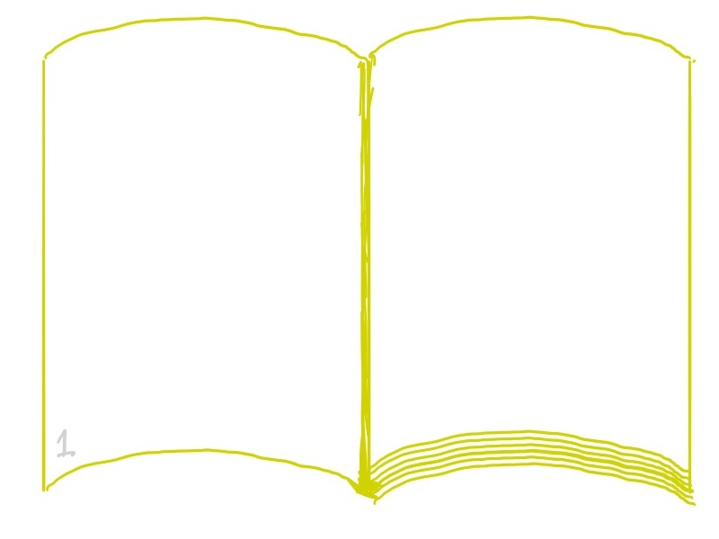
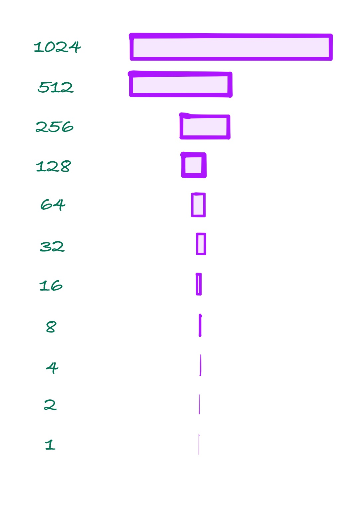
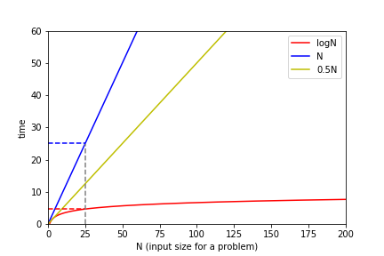
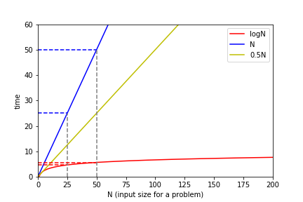

class: center, middle, title-slide # CSCI-UA 102 ## Data Structures <br> ## Data Structures and Algoriths <br>(Bird's Eye View) .author[ Instructor: Joanna Klukowska <br><br><br> ] .license[ Copyright 2020 Joanna Klukowska. Unless noted otherwise all content is released under a <br> [Creative Commons Attribution-ShareAlike 4.0 International License](https://creativecommons.org/licenses/by-sa/4.0/).<br> Background image by Stewart Weiss<br>] --- layout:true template: default name: section class: inverse, middle, center --- layout:true template: default name: breakout class: breakout, middle --- layout:true template:default name:slide class: slide .bottom-left[© Joanna Klukowska. CC-BY-SA.] --- template: section # Phone-book Search ## (as an introduction to algorithm performance analysis) --- ## Remember Phone-books? - __Raise your hand if you have ever seen a phone-book.__ -- - __Raise your hand if you have every used a phone-book.__ -- .center[ <figure > <img width="600" alt="phonebook" src="https://upload.wikimedia.org/wikipedia/commons/d/d3/Telefonbog_ubt-1.JPG"> </img> .small[<figcaption markdown="1"> Tomasz Sienicki / [WikimediaCommons](https://commons.wikimedia.org/wiki/File:Telefonbog_ubt-1.JPG) / [CC BY](https://creativecommons.org/licenses/by/3.0) <figcaption markdown="1"> ] </figure> ] --- name:Jane-take1 ## Searching For Jane Wong (Take 1) .left-column2[ .pseudocode[ 1. open the phone-book on page one 1. if Jane Wong is on that page - get her number 1. otherwise - flip to the next page - go back to step 2 ] ] -- <img alt="phonebook closed" src="img/03/phonebook-2.jpg" width=340px /> --- template: Jane-take1  --- template: Jane-take1 <img alt="phonebook one page turned" src="img/03/phonebook-4.jpg" width=340px /> --- template: Jane-take1 name:Jane-take1-final --- template:Jane-take1-final You are most likely going to tell me that this is not a very good algorithm, but let's think about it for a while. -- - Is the algorithm correct? (i.e., will it find Jane Wong in the phone book?) -- __YES__ -- - Is it efficient? (i.e., is this the fastest way of doing it?) -- __NO__ -- - Assuming that there are 1,000 pages in the phone book, how many page turns will it require? -- <br>__can't know for sure, but ~800-900__ (or 1000 if Jane is not listed) -- - How about if there are 10,000 pages in the phone book? How many page turns will be needed? -- <br>__again, can't know for sure, but ~8,000-9,000__ (or 10,000 if Jane is not listed) --- template:Jane-take1-final .yellowbox[ When the number of page turns is directly proportional to the total number of pages, we are using a __linear__ algorithm to search for Jane. ] -- More generally, .yellowbox[ When the number of operations is directly proportional to the input size (generally denoted as `N`), we are using a __linear__ algorithm. This is often described as an `O(N)` algorithm. ] --- ## Searching For Jane Wong (Take 2) .pseudocode[ 1. open the phone-book on page one 1. if Jane Wong is on that page - get her number 1. otherwise - __flip two pages__ - go back to step 2 ] -- - Is the algorithm correct? (i.e., will it find Jane Wong in the phone book?) -- __NO__ -- But we can fix it taking advantage of the fact that phone books are sorted. --- ## Searching For Jane Wong (Take 2.5) .pseudocode[ 1. open the phone-book on page one 1. if Jane Wong is on that page - get her number 1. otherwise - if the current page contains names _after_ Jane Wong - __go back one page__ - go back to step two - otherwise - __flip two pages__ - go back to step 2 ] -- - Is the algorithm correct? (i.e., will it find Jane Wong in the phone book?) -- __YES__ -- - Is it efficient? (i.e., is this the fastest way of doing it?) -- <br> __NO__ (well, it is twice as fast as the _take 1_ algorithm, but we can do better) -- - The number of page turns required by this algorithm is still directly proportional to the number of pages, so it is still a __linear algorithm__. --- name:Jane-take3 ## Searching For Jane Wong (Take 3) This is the algorithm that most people would follow (well, approximately). .pseudocode[ 1. - 1. open the phone-book to the middle page {{content}} ] -- 1. if Jane Wong is on that page - get her number {{content}} -- 1. otherwise, if the page contains names _after_ Jane Wong - tear the phone book in half - throw out the second half (including the page you just looked at) - go back to step 1 {{content}} -- 1. otherwise, if the page contains names _before_ Jane Wong - tear the phone book in half - throw out the first half (including the page you just looked at) - go back to step 1 -- What is the missing first step? --- ## Searching For Jane Wong (Take 3) This is the algorithm that most people would follow (well, approximately). .pseudocode[ 1. if there is no phone-book left - Jane Wong is not listed, can't get her number 1. open the phone-book to the middle page 1. if Jane Wong is on that page - get her number 1. otherwise, if the page contains names _after_ Jane Wong - tear the phone book in half - throw out the second half (including the page you just looked at) - go back to step 1 1. otherwise, if the page contains names _before_ Jane Wong - tear the phone book in half - throw out the first half (including the page you just looked at) - go back to step 1 ] -- - Is the algorithm correct? (i.e., will it find Jane Wong in the phone book?) -- __YES__ -- - Is it efficient? (i.e., is this the fastest way of doing it?) -- __YES__ (although we won't prove it) -- - Assuming that there are 1,000 pages in the phone book, how many page turns will it require? -- <br>__at most 10__ -- - How about if there are 10,000 pages in the phone book? How many page turns will be needed? -- <br>__at most 14__ --- name:halving ## Power of Halving .left-column2[ The significant performance improvement in this algorithm comes from halving the number of pages that we need to look at after we examine each page. - in _take 1_ and _take 2.5_ the number of pages that we eliminated was 1 or 2 - in _take 3_ the number of pages that we eliminate is equal to the half of the remaining pages ] -- <img alt="cutting number of pages in half after each test" src="img/03/binary.gif" width=380px /> --- template:halving  <div style="margin:-200px 0 0 0"> .left-column2[ .yellowbox[ When the search space decreases by half after each comparison, the algorithm is said to be __logarithmic__. It is growing proportionately to the logarithm of the input size `N`. Such an algorithm is said to be `O(log N)`. ]] </div> --- name:compare-plots ## Comparing Performance of Algorithms --- template:compare-plots .center[ <img alt="plot of N, N/2 and logN" src="img/03/logN_N-1.png" width=600px /> ] --- template:compare-plots .center80[.center[  For a fixed value of `N=25`, the time that a logarithmic algorithm takes is much smaller than the time taken by a linear algorithm. ]] -- .center80[.center[ (This may not always be true for very small values of `N`, but it always becomes true as `N` grows.) ]] --- template:compare-plots .center80[.center[  As we double the `N = 50`, the time taken by a linear algorithm doubles, but the time taken by a logarithmic algorithm barely increases. ]] --- template: breakout ### Group Discussion: What do you think are some applications of a binary search algorithm (take 3 in our phone-book search)? - In breakout rooms of 3-4 people discuss some applications in which the binary search algorithm might be useful. - You should come up with 2-3 different applications. Try to think outside of the proverbial box. - After 5-10 minutes, some groups will get a chance to report on what they came up with. --- template: section # Working with Arrays --- template: slide ## An Array as The First Data Structure An __array__ is probably the first data structure that everybody learns. </optgroup>